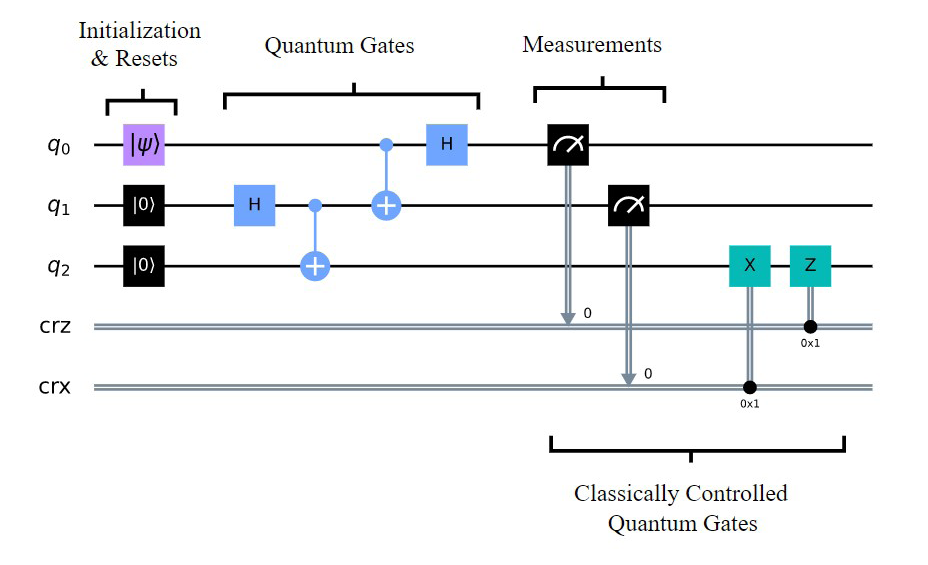
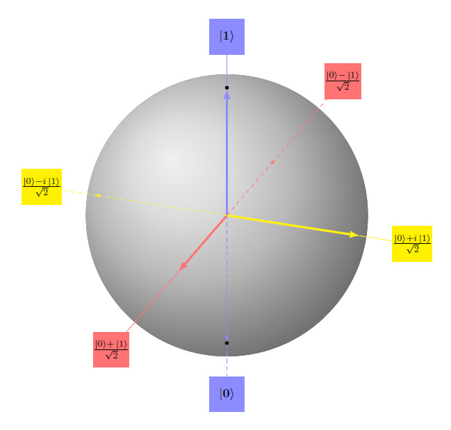
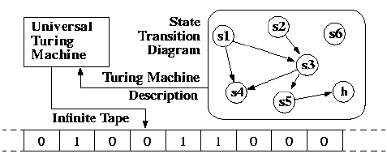
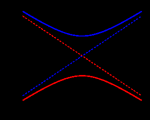
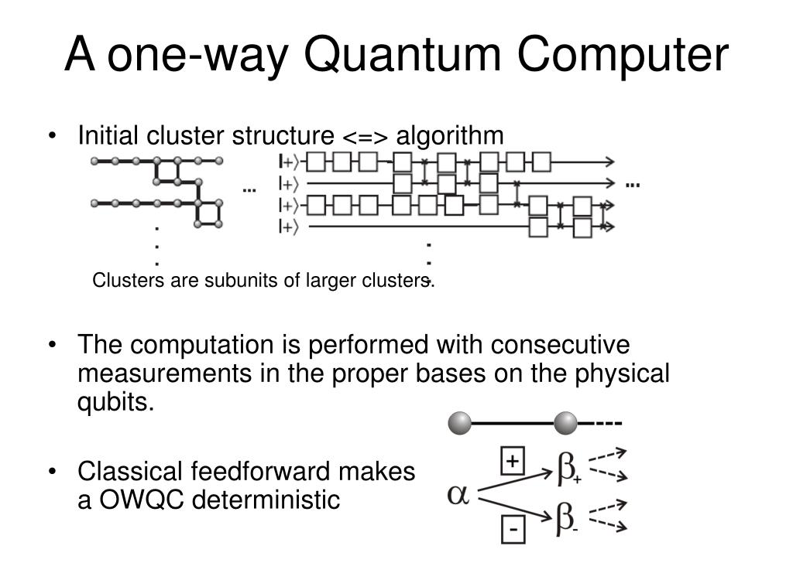
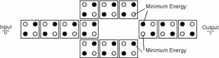
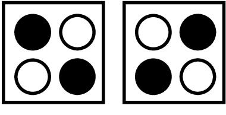

A computing model is the abstract description of how a machine turns input into output. Classical computing has settled on a single dominant picture, the Turing machine and its practical cousin the von Neumann architecture, so it is easy to forget that a model is a choice rather than a law of nature. Quantum computing has not settled in the same way. Several models exist, each describing the same underlying physics from a different angle, and each making different things easy and different things hard.
This matters because the model shapes everything above and below it. It dictates how you express an algorithm, what counts as a single elementary operation, how errors creep in, and which hardware platforms are a natural fit. The good news is that the leading models are provably equivalent in power: anything one can compute, the others can compute too, often with only polynomial overhead. The practical news is that they are not equally convenient, and the field has converged on one of them for day-to-day work.
This chapter surveys the main models. We start with a map of the landscape, then look closely at the quantum circuit model, the quantum Turing machine, the adiabatic quantum computer, the one-way (measurement-based) quantum computer, and quantum cellular automata. By the end you will understand why the circuit model dominates, and why the alternatives still matter.
There are several recognized models of quantum computation. The five covered in this chapter are the most studied: the quantum circuit model, the quantum Turing machine, the adiabatic quantum computer, the one-way (measurement-based) quantum computer, and quantum cellular automata. Other formulations exist, including topological quantum computation and continuous-variable models, but these five capture the conceptual range.
The most widely used model by a wide margin is the quantum circuit. Nearly every quantum programming framework in use today, from Qiskit to Cirq to PennyLane, expresses computations as circuits of gates acting on qubits. When a vendor quotes a qubit count and a gate fidelity, they are speaking the language of the circuit model.
It is important to keep two ideas separate. A computing model is not the same as a hardware platform. Superconducting transmons, trapped ions, and photonic chips are platforms, the subject of Chapters 5 and 7. The circuit model, the adiabatic model, and the rest are abstract descriptions that a platform can implement. A trapped-ion machine and a superconducting machine can both run the circuit model, and a photonic machine is a particularly natural home for the measurement-based model. The model tells you how to think about the computation; the platform tells you how the physics is realized.
The models are also computationally equivalent in the formal sense. The circuit model and the adiabatic model can simulate each other with polynomial overhead, and the one-way model can simulate any circuit. Equivalence in power, however, does not mean equivalence in convenience. Each model offers a different lens, and some lenses are far easier to look through for a given task. The rest of this chapter is a brief, accurate tour of each.
The quantum circuit model is the standard framework for describing quantum computation. In it, a computation is a sequence of quantum gates applied to a register of qubits, followed by measurement. The qubits start in a known state, usually all set to the computational basis state |0⟩. A series of gates transforms that initial state into a desired final state. Then each qubit is measured, collapsing it to a classical 0 or 1 and producing an output bit string.
The structure of a circuit has three clean stages, shown in Figure 6.1. First comes state preparation: each qubit is initialized in a definite computational basis state. Second come the quantum gates, which are reversible, unitary transformations on the register. Single-qubit gates such as the Hadamard (H) gate create superposition; the controlled-NOT (CNOT) gate entangles two qubits; phase gates rotate the relative phase. Together a small set of such gates is universal, meaning any quantum computation can be built from them to arbitrary accuracy. Third comes measurement in the computational basis, which reads out the answer.

A subtle but central feature is that quantum gates are reversible. Classical logic gates such as AND and OR throw information away (you cannot reconstruct the two inputs of an AND gate from its single output), but every quantum gate is a unitary operation that can in principle be run backward. Reversibility is not an option in quantum mechanics; it is a requirement, because the evolution of an isolated quantum system is unitary. This is why there is no quantum equivalent of the irreversible classical gates until measurement, which is the one deliberately irreversible step.
The single-qubit states that gates move around are conveniently pictured on the Bloch sphere, shown in Figure 6.2. The north and south poles represent the basis states |0⟩ and |1⟩, and every other point on the surface is a valid superposition. Gates correspond to rotations of the sphere. A Hadamard gate, for instance, takes a pole to a point on the equator, an equal superposition of |0⟩ and |1⟩. The Bloch sphere makes it visually obvious that a qubit holds far more than one bit of orientation, even though measurement extracts only one bit.

The output of a quantum circuit is inherently probabilistic. Because measurement collapses superpositions, repeating the same circuit can yield different bit strings on different runs. The art of quantum algorithm design is to arrange the gates so that interference makes the desired answers far more likely than the wrong ones. Running the circuit many times and tabulating the results, an exercise sometimes called collecting shots, reveals the probability distribution the algorithm produces. Predicting that distribution in advance is itself a hard problem; if it were easy, a classical computer could do the quantum computer's job.
That difficulty is precisely the source of quantum advantage. Any quantum circuit can be simulated on a classical computer, but the cost grows steeply. Adding a single qubit roughly doubles the size of the state vector a classical simulator must track, so the memory cost of brute-force simulation scales as 2 to the power of the number of qubits. A few dozen qubits already push past what the largest classical machines can hold. Not every circuit is this expensive: certain restricted families, such as circuits built only from Clifford gates (Hadamard, CNOT, and phase gates), can be simulated efficiently on classical hardware, a result known as the Gottesman-Knill theorem. Knowing which circuits are classically easy and which are hard is essential for benchmarking real devices and for validating that a quantum machine is doing something a classical one cannot.
Going Deeper - Why one extra qubit doubles the classical cost
A classical description of an n-qubit pure state is a list of 2 to the power n complex amplitudes, one for every possible bit string the register could collapse to. With 10 qubits that is 1,024 numbers, with 20 qubits about a million, with 30 qubits about a billion. Each added qubit doubles the count. This exponential blow-up is why simulating a 50-qubit circuit on a classical supercomputer is at the edge of feasibility and a 300-qubit circuit is hopeless: the number of amplitudes would exceed the number of atoms in the observable universe. The quantum computer sidesteps the bookkeeping by being the physical system rather than describing it.
The quantum Turing machine (QTM), also called the universal quantum computer, is the most abstract of the models. It is the quantum generalization of the classical Turing machine, the theoretical device that underpins all of computability theory. A classical Turing machine has an infinite tape, a read/write head, and a finite set of internal states, and it is defined by a transition rule that says how the head moves and what it writes based on the current state and the symbol it reads. Figure 6.3 shows the familiar picture: a control unit, an infinite tape of cells, and a state transition diagram describing the rules.

A quantum Turing machine keeps this skeleton but makes the tape, the head position, and the internal state quantum mechanical. The machine can exist in a superposition of configurations and evolves by a unitary transition rule rather than a deterministic one. The Church-Turing thesis, the deep claim that any effective algorithm can be carried out by a Turing machine, has a quantum extension: any physically realizable computation can be expressed as a particular quantum Turing machine. In this sense the QTM is the formal definition of what it means to be a universal quantum computer.
The QTM was historically important. David Deutsch introduced it in 1985, and it gave the field its first rigorous definition of quantum computation and the first complexity-theoretic results, including the complexity class BQP (bounded-error quantum polynomial time). Yet the model is cumbersome to work with. Describing an algorithm as a tape-shuffling machine is awkward, much as it is in the classical case, where no working programmer thinks in terms of tape heads. More than two decades ago the quantum circuit model supplanted the QTM as the tool of choice for designing algorithms and reasoning about complexity. The two are provably equivalent, so the circuit model lost nothing in power while gaining enormously in usability. The QTM remains a cornerstone of theory and a reference point for what universality means, but it is not how anyone builds or programs a machine.
Adiabatic quantum computation (AQC) takes a completely different approach. Instead of applying a discrete sequence of gates, it encodes the answer to a problem in the ground state, the lowest-energy state, of a carefully designed quantum system. The computation consists of slowly evolving the system from a simple starting Hamiltonian, whose ground state is easy to prepare, to a final Hamiltonian, whose ground state holds the solution. If the change is slow enough, the system stays in its ground state the whole way, and reading out the final state gives the answer.
The principle that guarantees this is the adiabatic theorem. It states that a quantum system kept in its ground state will remain in the ground state under a sufficiently slow change of its conditions, provided there is always an energy gap separating the ground state from the next-higher state. The relevant picture is the energy spectrum during the evolution, sketched in Figure 6.4. The two lowest energy levels approach each other at some point in the computation, and the smallest separation between them is the minimum energy gap. The size of that gap controls everything.

This is where AQC's promise and its difficulty both live. As long as the outside environment delivers less energy than the gap between the ground state and the first excited state, the system has only a small probability of jumping out of the ground state, and it can stay in the correct state as long as the computation needs. But the evolution has to be slow. Run it too fast and you supply enough energy to kick the system into an excited state, ruining the calculation. The required slowness scales inversely with the square of the minimum gap, so a small gap forces a long runtime. The trouble is that for hard problems the gap tends to shrink as the number of qubits grows, which can erase the speedup. Adiabatic computation also has to fight energy relaxation, the tendency of a real system to leak out of its intended state; keeping the environment colder than the gap is the defense, and it is one reason these machines run at extreme cryogenic temperatures.
AQC is closely related to quantum annealing, the heuristic version implemented commercially by companies such as D-Wave. Quantum annealing relaxes the strict adiabatic conditions and aims for good-enough solutions to optimization problems rather than guaranteed ground states. Importantly, adiabatic quantum computation in its general form is provably equivalent in power to the circuit model, so it is a route to universal, potentially fault-tolerant quantum computing, not merely a special-purpose optimizer. Its appeal is that it sidesteps some of the circuit model's complexities and may offer a more direct, scalable path for certain problems, especially combinatorial optimization where the answer is naturally the minimum of an energy landscape.
The one-way quantum computer, also called measurement-based quantum computation (MBQC), inverts the usual relationship between entanglement and computation. In the circuit model, you start with unentangled qubits and use gates to build up entanglement as the computation proceeds. In the one-way model, you create all the entanglement first, as a single large resource state, and then compute purely by measuring it.
The resource is a cluster state, a highly entangled state in which every qubit in the computation is linked to its neighbors in advance, typically on a two-dimensional grid. Once that state exists, computation proceeds entirely through a sequence of single-qubit measurements performed in a specific order and in specific bases. Figure 6.5 illustrates the idea: the initial cluster structure corresponds to the algorithm, and the computation runs as consecutive measurements in the proper bases on the physical qubits.

The clever part is how determinism is recovered from random measurement outcomes. Each measurement result is recorded classically, and that outcome determines the basis for the next measurement. This classical feedforward steers the computation so that the inherent randomness of quantum measurement is corrected as it goes, making the overall result deterministic. The algorithm is therefore encoded not in a sequence of gates but in the pattern and order of measurements applied to the cluster. The final answer is read from the classical data the measurements produce. Because each qubit is consumed when it is measured, the original cluster state is destroyed during the computation, which is exactly why the model is called one-way.
This approach can offer greater scalability, particularly on photonic platforms, where large entangled states of light can be generated using squeezed light and ordinary optical components. Two research groups demonstrated large two-dimensional cluster states of light by this route, pointing toward architectures where scalability is built in from the start. It is not effortless, however. Creating large cluster states is demanding, and for universal computation the entanglement structure must be at least two-dimensional. On several existing platforms, such as ion traps and solid-state superconducting systems, the readily produced cluster states have so far been one-dimensional, which is not sufficient for universality. Photonics is the natural home for this model, and it is a leading reason the measurement-based picture continues to attract attention.
Going Deeper - Entanglement as a resource you spend
The one-way model reframes entanglement as a consumable fuel rather than something the computation generates. You manufacture a tank of it up front, in the form of the cluster state, and then each measurement burns a little of it to perform one step of logic. This view has practical consequences. It cleanly separates the hard physics of making entanglement from the comparatively easy operation of single-qubit measurement, and it lets the two be optimized independently. It also explains why photonic systems are such a good fit: photons are excellent carriers of entanglement and notoriously difficult to push through two-qubit gates, so a model that needs entanglement once at the start and only single-qubit measurements thereafter plays to their strengths.
A quantum cellular automaton (QCA) merges two ideas: the classical theory of cellular automata, familiar from patterns like Conway's Game of Life, and the principles of quantum information processing. A cellular automaton is a grid of cells that update in lockstep according to a simple local rule, where each cell's next state depends only on its own state and those of its immediate neighbors. A quantum cellular automaton makes the cells quantum systems and the update rule a unitary, local quantum operation.
The defining features of a QCA are worth listing precisely. Computation is performed by the parallel operation of many identical, finite-dimensional quantum cells, each of which can be a qubit. Every cell sits in a neighborhood of other cells, forming a lattice that may or may not have periodic boundary conditions. The evolution obeys physics-like symmetries: it is local, meaning the next state of a cell depends only on its current state and that of its neighbors; it is homogeneous, meaning the same rule acts everywhere; and it is time-independent, meaning the rule does not change from step to step. Both the state space of the cells and the operations applied to them are grounded in quantum mechanics.
A concrete and well-studied relative is the quantum-dot cellular automaton, in which information is encoded not in voltage levels but in the spatial arrangement of charge within a cell. A typical cell holds four quantum dots at the corners of a square and two mobile electrons. Coulomb repulsion pushes the electrons to opposite corners, so a cell has two stable diagonal configurations, which represent binary 0 and 1. Figure 6.6 shows the two polarizations of such a cell.

Logic emerges from how neighboring cells interact. A cell driven into one polarization influences the next cell electrostatically, so a line of cells propagates a bit like a wire, and suitable arrangements of cells implement logic gates. Figure 6.7 shows a chain of quantum-dot cells acting as a binary wire, carrying an input value through to an output. The minimum-energy configurations along the line are the ones that transmit the signal faithfully.

Quantum-dot cellular automata are attractive in principle because they could compute with extremely low power and very high density, encoding information in electron position rather than in current flow. The approach is more an active research direction than a mainstream route to a general-purpose quantum computer, but it illustrates how broadly the principles of local, parallel quantum evolution can be applied. With these models surveyed, the next chapter turns from abstract frameworks to the physical approaches that actually realize qubits in hardware.
BNC in Practice - Models, platforms, and the instruments between them
Whatever model a quantum machine implements, building and characterizing it depends on precise classical control and measurement. Circuit-model machines need exactly timed gate pulses; adiabatic machines need slow, clean control sweeps; measurement-based machines need fast, accurately triggered single-qubit readout and classical feedforward. Berkeley Nucleonics supplies timing, pulse generation, and signal sources used in research and test environments where this kind of precision matters. For the specific timing resolution, channel count, and frequency range relevant to a given experiment, verify against the current BNC datasheet for the instrument in use.
Take it interactively. The quiz lives on its own page with hidden answers - write your attempt first (even four characters works), then reveal. Self-graded. About 10 minutes.
Or read the questions and answers inline below (preserved for print and offline use).
[1] D. Deutsch, "Quantum theory, the Church-Turing principle and the universal quantum computer," Proceedings of the Royal Society A, 1985 (introduction of the quantum Turing machine). Verify citation details before publication.
[2] D. Gottesman and others, on the Gottesman-Knill theorem and efficient classical simulation of Clifford circuits. Verify exact reference and statement before publication.
[3] E. Farhi and others, "Quantum Computation by Adiabatic Evolution," 2000, and subsequent work establishing equivalence of adiabatic and circuit models. Verify citation details before publication.
[4] R. Raussendorf and H.J. Briegel, "A One-Way Quantum Computer," Physical Review Letters, 2001 (cluster states and measurement-based computation). Verify citation details before publication.
[5] C.S. Lent and others, on quantum-dot cellular automata. Verify exact reference before publication.
[6] M.A. Nielsen and I.L. Chuang, "Quantum Computation and Quantum Information," Cambridge University Press (standard reference for the circuit model, Bloch sphere, and BQP). Verify current edition before publication.
[7] Qiskit documentation, qiskit.org (definitions and conventions for quantum circuits). Verify before publication.
[8] Berkeley Nucleonics Corporation, current timing, pulse generator, and signal source datasheets at berkeleynucleonics.com. Verify all specifications against the current datasheet before publication.